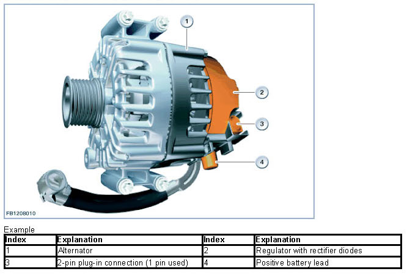
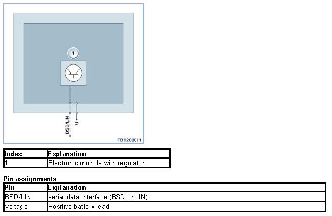
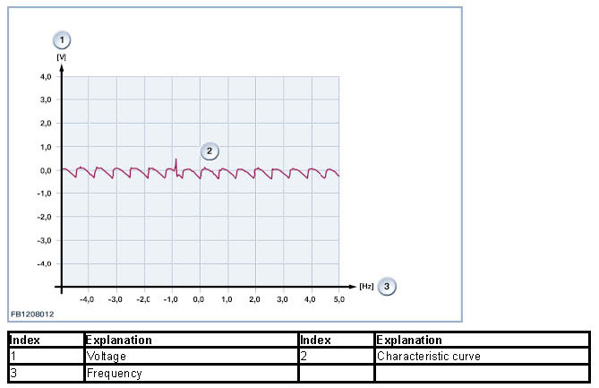

Alternator
Alternator
Alternator
The alternator exchanges data with the engine control unit using a serial data interface. The alternator provides the engine control unit with information, e.g. type and manufacturer. This enables alternator-specific information to be processed inside the engine control unit and adapts the control of the alternator to the installed alternator type.
Functional description
The alternator maintains the desired level of vehicle voltage. The alternator also supplies all electrical consumer units during driving. The controller regulates the output voltage of the electrically excited alternator with uncontrolled rectifier by applying the excitation current.

For the alternator with serial data interface, the following functions are implemented in the engine control unit:
- Switching the alternator on and off on the basis of defined parameters
- Temperature-dependent maximum permitted power consumption of the alternator
- Calculation of the alternator input torque and the alternator current based on the parameters transmitted by the alternator regulator.
- Control of the reaction of the alternator with addition of high power consumers (load-response function)
- Alternator diagnosis and diagnosis of the data line between alternator and engine control unit.
- Storage of any faults that occur on the alternator in the fault memory of the engine control unit
- Activation of the charge indicator light on the instrument panel whenever a fault is identified
Structure and inner electrical connection
The alternator has a separate terminal for the positive battery lead. The control variables (e.g. nominal voltage of alternator) are transferred to the controller via the serial data interface (BSD or LIN).
The regulator is attached to the back of the alternator.

Characteristic curve and setpoint values
The oscilloscope represents the voltage progression of an intact alternator. The level of the individual waves depends on the current load of the alternator. The length of the waves depends on the engine speed. The higher the engine speed the shorter the waves. At idle speed with consumer units switched on, an error-free alternator must deliver the following characteristic curve:

Observe the following target values for the alternator:
Size Value
Voltage range 6 to 16 V
Data frequency on serial 1164 to 1236 bit/s
data interface BSD
Data frequency on serial 19200 s
data interface LIN
Maximum temperature of 260 °C
the stator winding
Maximum speed 20000 rpm
Temperature range of -40 to 140 °C
regulator
Diagnosis instructions
Failure of the component
The main function of the alternator is also ensured in the event of interruption of the communication between the alternator and the engine control unit. The following fault causes are distinguishable by the fault memory entries:
- Overheating protection: The alternator is overloaded. For safety reasons, the alternator voltage is reduced until the alternator has cooled down again (the charge control lamp does not light up). That is a normal operating condition for the alternator.
- Mechanical fault: There is a mechanical block in the alternator. Or the belt drive is defective.
- Electrical fault: Defect in the excitation power circuit (transistor, diode), open circuit in the excitation coil, faulty controller.
- Communication failure: Faulty cable between engine control unit and alternator.
- Incorrect type of alternator: Incorrect or non-approved alternator installed
An interrupt or short circuit in the coils of the alternator cannot be detected.
We can assume no liability for printing errors or inaccuracies in this document and reserve the right to introduce technical modifications at any time.